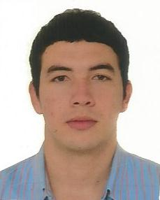

Nombre: Cristofer stiven
Apellido: Martinez velez
Fecha: Enero-08-1992
Lugar de nacimiento: Barrancabermeja
Información Personal
Habilidades: Todo los día nutro mis habilidades para que se fortalezca más y no se me deterioren como: Curiosidad, Lógica, Lectura, comprensión, Atención a los Detalles
Destrezas: Tengo lo más importante que necesita un ser humano y un profesional se llama pasión a partir de ese origen salen mis destrezas,talento, comunicación, trabajo en equipo, solución de problema, aprendizaje, creatividad, inquietud y autodidacta
Idioma
- Español:si
- Habla :si
- Escribe: si